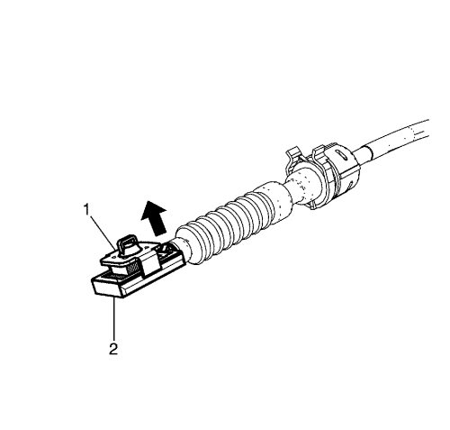
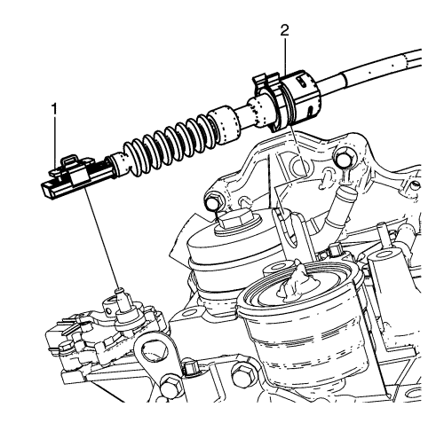
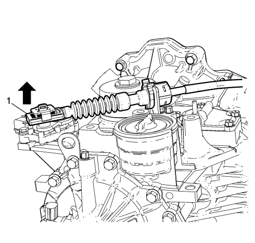

Ajuste del cable de la palanca selectora
Procedimiento de ajuste
Nota: Ajuste el cable de selección de la posición del cambio automático únicamente con el cambio y la palanca de cambios en posición de estacionamiento (P). De lo contrario, se podrá provocar un desajuste.
- Accione el freno de mano y calce las ruedas.
- Extraiga el conjunto del filtro de aire. Consultar Sustitución del conjunto del filtro de aire .
- Verifique que la palanca selectora de posición del cambio está en posición de estacionamiento (P).
- Verifique que la palanca del cambio manual está en posición P.

- Desconecte el terminal del cable de la palanca selectora del cambio (1) de la palanca selectora del cambio.
- Presione las lengüetas del clip de retén hacia adentro para soltar el cable de la palanca selectora del cambio (2) del soporte del cable.

- Tire hacia arriba de la herramienta de ajuste de cables (1) desde la guía de ajuste de cables (2).

- Monte el cable de la palanca selectora del cambio (2) en el soporte del cable.
- Conecte la herramienta de ajuste de cables de la palanca selectora (1) en el pasador de la palanca selectora del cambio.

- Tire hacia arriba de la guía de ajuste de cables (1) para fijarla en su lugar.
- Monte el conjunto del filtro de aire. Consultar Sustitución del conjunto del filtro de aire .
- Compruebe que todas las selecciones de marcha de la palanca de selección de posición del cambio funcionan correctamente.
| © Copyright Chevrolet. Reservados todos los derechos |